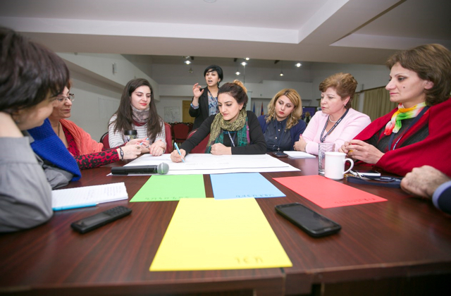
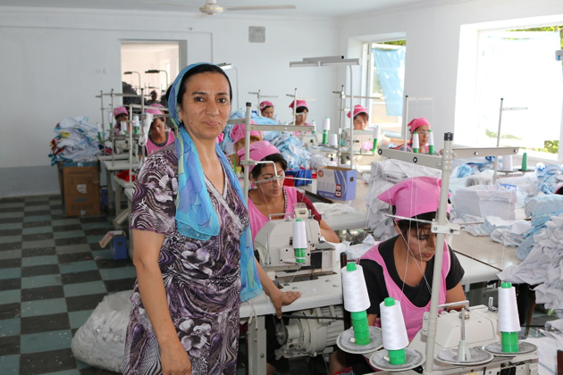
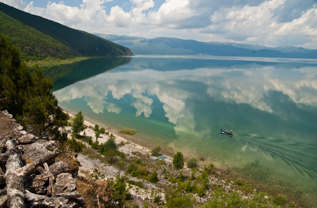
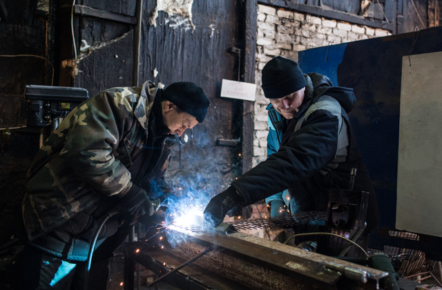
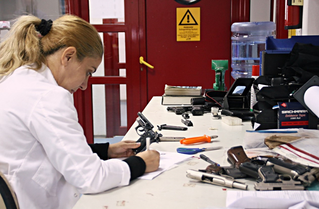

Preparing Women Candidates for Election
Women candidates for local government posts in Armenia receive training to prepare for elections, in the joint EU-UNDP Women in Local Democracy project, operating since 2012. Of the 124 candidates who participated in trainings, 81 were elected to local self-government bodies. Once elected, the women continue to work with UNDP, learning methods for involving people in decision-making and how to do gender-sensitive planning and budgeting.
EUROPE AND THE CIS
UNDP’s work in Europe and the Commonwealth of Independent States (CIS) spans 21 countries and territories across the Western Balkans, Caucasus, Western CIS, Central Asia and Turkey.
In the past 25 years, many millions of people have come to enjoy higher levels of health, education, and income as their countries transitioned from state socialism, with some joining the European Union or becoming international-aid donors. Since 2001, for instance, the middle class is estimated to have tripled in size.
But with low commodity prices, shrinking remittances, and slow economic growth in Europe and the Russian Federation and much of the rest of the region, income and employment-generation opportunities are disappearing. People without decent jobs face high risks of poverty and exclusion, with women, young workers, people living with HIV, and people with disabilities particularly prone to living on the margins of society.
The region also faces a number of risks. Many of these are associated with protracted and geopolitical conflicts in the Black Sea and Caspian Sea basins, as well as massive refugee flows.
While the region is not a significant producer of greenhouse gas emissions, its less wealthy countries have been disproportionately affected by the consequences of climate change, such as extreme weather events and increased pressure on water resources. These tensions and challenges are making it difficult for some countries to move forward with their development agendas.
The region’s well-educated labour force, relatively high levels of gender equality, and youthful populations of its southern and eastern countries hold the key to peace and creating modern and dynamic economies. Its vast renewable natural resources can also help promote more sustainable growth models.
UNDP works with its partners to help the region fulfil the Sustainable Development Goals, aiming to bolster human security and resilience; empower people through better governance and human rights; and promote more sustainable growth models.

COUNTRY SNAPSHOTS

Armenia
UNDP

Uzbekistan
UNDP
Supporting Entrepreneurs, Multiplying Incomes
Sanobar Tojibaeva stands in the middle of her textile production workshop in the Namangan region of Uzbekistan. Hers is one of many small businesses to receive grants from the Finnish-funded Aid for Trade project, which is helping to develop businesses and promote exports in 11 countries in Central Asia, the South Caucasus and Western CIS, benefitting more than 33,000 people. In Uzbekistan, the initiative has helped participants multiply their incomes by 2.5 times and access social benefits and pensions.

FYR Macedonia
UNDP
Preserving a Lake and Source of Livelihoods
With support from the Swiss Agency for Development and Cooperation and the Global Environmental Facility, UNDP has helped to reduce pollution and boost livelihoods in the Former Yugoslav Republic of Macedonia around Lake Prespa, which is affected by declining water levels. Water quality has improved and indigenous fish species have recovered thanks to a 30 percent reduction in pesticide use, while the 80 percent of residents who depend on apple farming have benefitted from new environmentally-friendly methods that have reduced costs and increased yields.

Ukraine
UNDP
Returning Jobs Lost to War
Sasha Dobyri, an internally displaced person from Donetsk, helps a co-worker solder metal in a factory in Kramatorsk, in eastern Ukraine. More than a million jobs have been lost as a result of the war. UNDP and the Government of Japan have helped 200,000 people find jobs and obtain psychological counselling while rebuilding essential health and social infrastructure.

Kosovo
UNDP
Helping Reduce Gun Violence
A technician at a Kosovo ballistics laboratory inspects small arms. With help from UNDP, this lab has nearly doubled the percentage of cases of gun crime it has solved. This is just part of UNDP’s ongoing work in the Western Balkans to cut down on small arms and gun violence, still a problem even though the war there ended close to two decades ago.